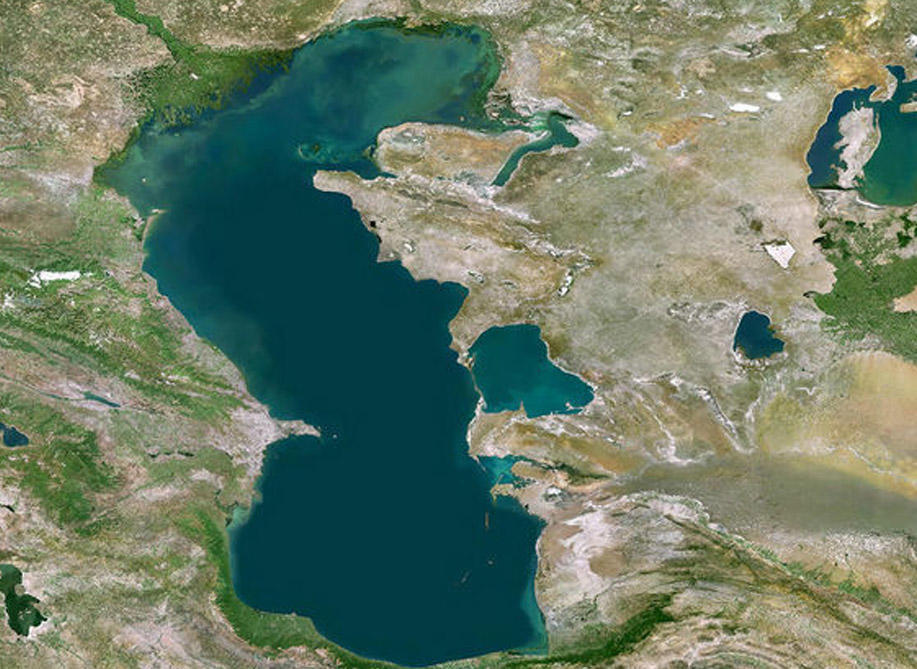

Xəzər dənizi Dünyanın ən böyük gölü – Xəzər dənizi. Sahəsi 371.000 km² Ən böyük dərinliyi 1025 metr 130 çay tökülür, suyun təxminən 70%-i Volqadan gəlir.2000-ci illərə qədər dünyada qara kürü istehsalının demək olar ki, 90%-i Xəzər dənizinin payına düşürdü.Təxminən 6 milyon il yaşı var.